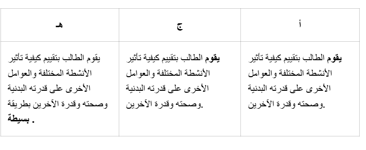

مقدمة
المقصود بالمثالية الجسدية هو التصور أو المعيار الذي يعتبره المجتمع أو الثقافة مثالياً من حيث مظهر وشكل الجسم. ويتأثر هذا المعيار غالباً بعوامل مختلفة مثل صناعة الأزياء، وسائل الإعلام، والمعايير الثقافية.
عندما يتعلق الأمر بالرياضة والأداء، يمكن أن يوفر نوع معين من شكل الجسم في بعض الحالات مزايا للرياضي. على سبيل المثال، يعتبر الطول ميزة في رياضة كرة السلة، بينما في رياضات أخرى قد يكون الطول الزائد عيباً. يمكن أن يؤدي هذا إلى اختيار أو تجنب رياضة معينة بناءً على الإمكانيات البدنية التي وُلد بها الشخص.
يمكن أن تخلق المثالية الجسدية أيضاً ثقافة ضغط يشعر فيها كل من الرياضيين وغيرهم أنهم مضطرون للوصول إلى نوع معين من الجسم أو مستوى معين من الأداء من أجل القبول أو النجاح. وقد يؤدي هذا الضغط بدوره إلى اللجوء إلى استخدام مختلف أنواع المنشطات، مما قد يسبب آثاراً جانبية خطيرة. بالإضافة إلى أن تعاطي المنشطات محظور في الرياضة، هناك أيضاً قوانين تنظم حيازة واستخدام المواد المصنفة كمنشطات.
قضية:
- لاكتساب المعرفة حول المثل العليا للجسم وما يمكن أن تؤدي إليه المثل العليا إذا سارت على نحو خاطئ
- لتعلم كيفية التفكير في كيفية تأثير المثل العليا للجسم على الأداء الرياضي
- لفهم كيفية تأثير المنشطات على الجسم
- للحصول على المعرفة حول القوانين واللوائح المتعلقة بالمنشطات.
المحتوى المركزي
يغطي القسم المحتوى الرئيسي التالي:
- مُثُل ومعايير الجسد في ثقافات الحركة المختلفة. كيف تؤثر على فرص الأفراد في المشاركة في أنشطة مختلفة.
- المنشطات والقوانين واللوائح الأخرى التي تحكم حظر المنشطات.
معايير التصنيف
المفاهيم في هذا القسم
- الجسم المثالي
- المواد المصنفة كمنشطات
- إيجابية الجسد
- فقدان الشهية
- الشره المرضي
- تقويم العظام